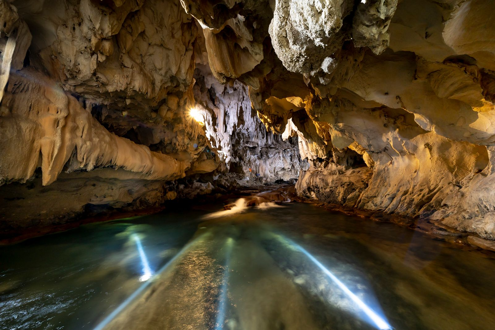

Karst groundwater studies · Dinaric karst, Slovenia
In karst, the map is a hypothesis until the dye comes back.
I am a hydrogeologist working in limestone country. Water utilities, environmental regulators and the people who build near springs hire me to answer one question honestly: where does this water actually come from, and where does it go? In karst the answer is never read off a map. It is earned — with gauges on the spring, dye in the swallow hole, and the patience to wait for the right flow.
- Dye traces completed
- 61
- Springs gauged or logged
- 38
- Catchments delineated
- 23
- Field seasons, Dinaric karst
- 14
- Traces that returned nothing
- 4
The practice's own record to the end of the 2025 season. The last line is counted on purpose: a trace with no recovery is a result, and it goes in the log like any other.

The recession, worked by hand
One relation.The arithmetic is printed.
When the rain stops, a spring does not stop — it spends its storage, and the way its flow falls is the cheapest X-ray of the aquifer we have. Recession analysis reads that fall. The standard first description is Maillet's relation (1905): discharge decays exponentially once recharge ends, at a rate set by the recession coefficient α. Set a spring below and watch what α does to it.
A large Dinaric spring after rain can pass 2,000 L/s. A hillside seep manages fifty. Both are springs; they are not the same problem.
α is the spring's character in a single number: how fast it spends what it has stored. Small α, deep storage. Large α, open conduits and a short memory.
Recessions are read between storms. The clock starts at the last recharge event, not at the last site visit.
Reading α — the bands used across this site
| α (per day) | Character | What it usually means |
|---|---|---|
| 0.005 – 0.010 | Slow — storage-fed | Most flow arrives through fissures and matrix storage. Drought-resilient; the spring a utility can plan around. |
| 0.010 – 0.050 | Mixed | Conduits drain first, storage sustains the tail. The commonest Dinaric pattern — and the one most often misread as a single α. |
| 0.050 – 0.150 | Fast — conduit-drained | Open channels, short residence time, flashy response to storms — and the shortest path for anything spilled on the surface to reach the spring. |
One honest warning, printed where the instrument is: a real karst recession is usually segments, not one curve — conduits first, then fissures, then storage. A careful report fits the segments separately and says where each fit stops being true. The explorer fits one segment, because it is a teaching instrument, not a report.
Services, as entered in the register
Status is thisseason's, honestly.
| Service | Who commissions it | Study type | Status |
|---|---|---|---|
| Spring monitoring & recession analysis Gauging, logging and a recession read of your spring across one or more seasons. |
Water utilities | Monitoring, 1–4 seasons | Open — two slots, spring season |
| Dye-tracer testing Single or multi-point traces from swallow holes, boreholes or losing reaches to springs and wells. |
Utilities · regulators · quarry & infrastructure clients | Tracer test | Booked to the autumn flow window |
| Catchment delineation & source-protection support Where a spring's water actually comes from, drawn from evidence — traces first, topography second. |
Water utilities · municipalities | Desk + field delineation | Open |
| Abstraction impact assessment — science support The hydrogeological evidence behind an application. The licence decision itself belongs to the regulator; this practice supplies evidence, never decisions. |
Developers · utilities | Assessment support | Open |
| Vulnerability mapping EPIK-style intrinsic vulnerability mapping of a catchment, field-checked rather than drawn from the desk alone. |
Regulators · protected-area managers | Mapping study | Waiting list — next intake, new year |
Fees, printed before we talk
Fixed fee afterreconnaissance.
Every study is quoted as a fixed fee after a paid reconnaissance visit — walked ground first, numbers second. The day rates below are the whole basis of the arithmetic; there is no second price list.
- €760 / dayDye-tracer testing — field and interpretation days, senior hydrogeologist
- €720 / dayCatchment delineation — desk and field days
- €640 / daySpring monitoring — installation, reading and seasonal reporting days
- €450 fixedReconnaissance visit within Slovenia — credited against the study fee if the study proceeds
Invoices are staged: 40% on commission, 40% when fieldwork closes, 20% on delivery of the report and its data files. VAT excluded throughout.
What moves the price
- Access and season, first. A tracer test must wait for the right flow: too low and the dye never arrives, too high and it is diluted past detection. Waiting for the window is in the fee; forcing the date is how traces fail.
- The number of points. Each extra injection point and each extra monitored spring adds field days and laboratory runs.
- Terrain. A catchment you can drive is cheaper than one you reach through a cave system. Caves are costed honestly, with a second qualified person underground — never solo.
- The report's audience. A report written for a regulator's file, with the full data appendix, takes longer than one written for a client's own planning.
Count both people where the work needs two — underground work always does. A single-point trace at one spring typically runs 8–14 field person-days.
A budget figure for planning, not a quotation. The fixed fee is set after reconnaissance, when the catchment has been walked and the flow window chosen. Travel beyond 100 km is charged at cost and agreed in advance — never discovered on the invoice.
The connection the desk study ruled out
Study 07 · Dinaric karstFull entry in the log.
A quarry operator's desk study had placed a drinking-water spring safely outside the catchment of its proposed extension — the surface topography said so, tidily. The regulator was not convinced, and neither was I: in karst, surface divides and groundwater divides are different lines, and only one of them is drawn by water.
We injected uranine at a swallow hole inside the proposed extension during a rising flow. The dye arrived at the spring in under three days. The catchment boundary moved — on the map, in the report, and in the planning decision that followed.
“The desk study told us what we wanted to hear. Dr Kovač's trace told us the truth in time to redesign around it — a cheaper outcome than the inquiry we were heading for.”
A spring, a quarry, or a boundary the water disagrees with?
Tell me what the water is doing and what decision depends on it. I reply within two working days — with questions first, and a reconnaissance proposal if the study is sound. If it is not, I will say so and tell you who does that work better.